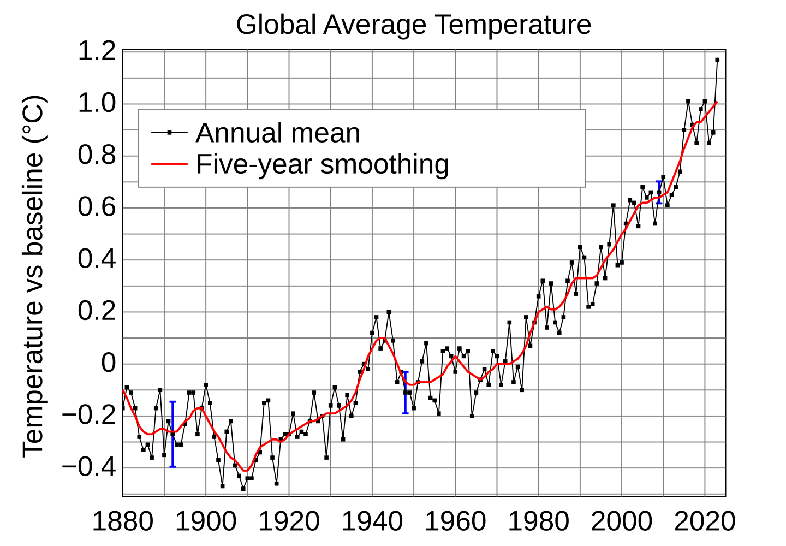

Weather Forecast Technology
From surface observations and satellites to numerical models and AI-assisted forecasts.
Modern forecasting blends observations, physics-based numerical models, human expertise, and increasingly AI-assisted pattern recognition.
Core pipeline
- Observe the atmosphere with stations, radar, satellites, and aircraft.
- Assimilate data into model initial conditions.
- Compare ensembles to express uncertainty.
Source: Wikimedia Commons climate data chart · Last updated 2026-06-20